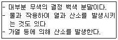

위험물기능사 (2005-10-02 기출문제)
1과목: 화재 예방과 소화방법
1. 제조소 등의 소요단위 산정 시 위험물은 지정수량의 몇 배를 소요 단위로 하는가?
- 5배
- 10배
- 20배
- 50배
(정답률: 88%)

2. 강화액 소화기에 관한 설명 중 바르지 못한 것은?
- 제5류 위험물 화재에 적응성이 있다.
- 제6류 위험물 화재에 적응성이 있다.
- 봉상강화액 소화기는 제4류 위험물에 적응성이 있다.
- 무상(霧狀)과 봉상(棒狀)강화액 소화기로 대별된다.
(정답률: 68%)
3. 다음 중 할로겐화물 소화약제인 Halon 1301의 분자식은?
- CHBr
- CH3I
- CF2Br2
- CF3Br
(정답률: 88%)
4. 위험물 제조소 등의 전기설비가 있는 곳에 적용하는 소화설비는?
- 옥내소화전설비
- 스프링쿨러설비
- 포소화설비
- 할로겐화합물소화설비
(정답률: 55%)
5. 다음 중 소화약제로 사용하지 않는 것은?(문제 오류로 실제 시험에서는 1, 4번이 정답 처리 되었습니다. 여기서는 1번을 누르면 정답 처리 됩니다.)
- CF2Br
- NaHCO3
- Al2(SO4)3
- CaSO4
(정답률: 81%)
6. 제조소 또는 취급소용 건축물로서 외벽이 내화구조로 된 것은 연면적 몇 m2를 소요단위 1단위로 하는가?
- 50m2
- 100m2
- 150m2
- 200m2
(정답률: 69%)
7. 위험물의 제조소에는 주의사항을 표시한 게시판을 따로 설치해야 한다. 제4류 위험물에 표시해야 하는 내용은?
- 화기주의
- 물기엄금
- 화기엄금
- 충격주의
(정답률: 78%)
8. 다음 중 연소가 일어나기 위한 조건에 해당되지 않는 것은?
- 성냥불
- 헬륨
- 산소
- 황
(정답률: 80%)
9. 다음 위험물 중 옥외탱크저장소에 저장하는 경우에 있어서 수조에 넣어 보관해야 하는 물질은?
- 이황화탄소
- 휘발유
- 경유
- 디에틸에테르
(정답률: 73%)
10. 다음 중 제4류 위험물 화재에 적용할 수 없는 소화기는?
- 포소화기
- 물소화기
- 인산염류소화기
- 이산화탄소소화기
(정답률: 67%)
11. 다음 소화제를 사용할 때 적당하지 않은 것은?
- 마른 모래는 모든 위험물류의 화재에 적응된다.
- 분말소화제는 셀룰로이드의 화재에 가장 적당하다.
- 물은 탄화칼슘의 화지에 사용하여서는 안 된다.
- 자기반응성물질의 화재에는 일반적으로 다량의 주수가 유효하다.
(정답률: 57%)
12. 자연발화의 형태 중 산화열에 의하여 발화될 가능성이 가장 큰 것은?
- 건성유, 석탄
- 퇴비, 먼지
- 목탄, 활성탄
- 코우코스, 셀룰로이스
(정답률: 44%)
13. 주수소화에 의하여 위험이 따르는 물질은?
- 초산
- 니트로셀룰로오스
- 금속나트륨
- 유황
(정답률: 81%)
14. 제2류 위험물인 마그네슘 분말의 성질 및 화재예방법과 소화방법에 대한 설명으로 옳지 않는 것은?(오류 신고가 접수된 문제입니다. 반드시 정답과 해설을 확인하시기 바랍니다.)
- 2mm 체를 통과한 것만 위험물에 해당된다.
- 이산화탄소 소화약제를 방사하면 소화가 가능하다.
- 가연성 고체로 산소와 반응하여 산화반응을 하면서 몰당 143.7kcal의 열을 발생한다.
- 주수소화를 하면 가연성의 수소가스가 발생한다.
(정답률: 49%)
15. 위험물안전관리법 상의 소화설비 중 “기타소화설비”가 아닌 것은?
- 팽창질석
- 마른모래
- 물통, 수조
- 소화약제에 의한 간이소화용구
(정답률: 56%)
16. 마른모래 0.5 단위란?
- 삽을 상비한 10ℓ 이상의 것 1포
- 삽을 상비한 25ℓ 이상의 것 1포
- 삽을 상비한 50ℓ 이상의 것 1포
- 삽을 상비한 100ℓ 이상의 것 1포
(정답률: 66%)
17. 위험물안전관리법 상 대형소화기의 방호대상물의 각 부분으로부터 설치방법으로 옳은 것은? (단, 옥내소화전, 옥외소화전, 스프링클러 또는 물분무소화설비와 함께 설치하는 경우 외의 경우)
- 보행거리 30m 이하일 것
- 보행거리 20m 이하일 것
- 수평거리 30m 이하일 것
- 수평거리 20m 이하일 것
(정답률: 57%)
18. 제조소 등에 전기설비가 설치된 경우에는 당해장소의 면적 몇 m2 마다 소형수동식소화기를 1개 이상 설치하여야 하는가?
- 50
- 100
- 150
- 200
(정답률: 59%)
19. 다음 위험물에 해당되는 것은?

- 제1류 위험물
- 제2류 위험물
- 제3류 위험물
- 제5류 위험물
(정답률: 69%)
20. 위험물안전관리법 상 화재 예방 규정을 정하여야 할 제조소 등으로 옳지 않은 것은?(오류 신고가 접수된 문제입니다. 반드시 정답과 해설을 확인하시기 바랍니다.)
- 지정수량 10배 이상의 위험물을 취급하는 제조소
- 지정수량 50배 이상의 위험물을 취급하는 일반 취급소
- 지정수량 100배 이상을 저장·취급하는 옥외 저장소
- 지정수량 150배 이상을 저장·취급하는 옥내 저장소
(정답률: 48%)
2과목: 위험물의 화학적 성질 및 취급
21. 다음은 유황의 동소체를 나열한 것이다. 이들 중 이황화탄소(CS2)에 녹는 것들로 바르게 짝지어 놓은 것은?
- ㄱ, ㄴ
- ㄱ, ㄷ
- ㄴ, ㄷ
- ㄱ, ㄴ, ㄷ
(정답률: 52%)
22. 아세트산에틸의 일반 성질 중에서 틀린 것은?
- 과일 냄새를 가진 무색투명한 액체이다.
- 수용액 상태에서도 인화의 위험이 있다.
- 물에 녹으며 수지, 유기물을 잘 녹인다.
- 인화성 물질로서 인화점은 –30℃ 이하이다.
(정답률: 39%)
23. 다음 물질의 성질 상 분진폭발 또는 연소의 위험이 없는 것은?
- 황
- 알루미늄
- 수산화칼슘
- 마그네슘
(정답률: 55%)
24. 다음 중 질산염류 물질을 취급하는 과정에서 화재(혼촉발화)나 폭발 등의 위험성이 없는 것은?
- 황린을 섞는 경우
- 마찰시키는 경우
- 가열하는 경우
- 물에 용해시키는 경우
(정답률: 67%)
25. 염소산나트륨(NaClO3)의 성상에 관한 설명으로 올바른 것은?
- 황색의 결정이다.
- 비중은 1.0이다.
- 환원력이 매우 강한 물질이다.
- 물, 에테르, 글리세린에 잘 녹으며, 조해성이 강하다.
(정답률: 67%)
26. 다음 위험물(법령상) 중 단독으로는 마찰 충격에 둔감하나 금속염으로 했을 때 폭발이 쉬운 것은?
- 피크린산
- 암모니아
- 알루미늄
- 톨루엔
(정답률: 48%)
27. 제3류 위험물의 일반적 성질로 옳은 것은?
- 황린을 제외하고 물에 대하여 위험한 반응을 초래하는 물질이다.
- 가연성고체로서 비교적 낮은 온도에서 착화하기 쉬운 이연성(易燃性), 속연성(速燃性)물질이다.
- 모두 무기금속화합물이며 대부분 무색의 결정이나, 백색 분말상태의 고체이다.
- 물에 대한 비중은 1보다 크며, 조해성(潮解性)이 있다.
(정답률: 57%)
28. 다음 제3류 위험물의 지정수량이 잘못된 것은?
- (C2H5)3Al – 10kg
- Na - 10kg
- LiH – 300kg
- CaC2 - 500kg
(정답률: 48%)
29. 액체 위험물은 운반용기 내용적의 몇 % 이하로 수납해야 하는가?
- 100% 이하
- 98% 이하
- 95% 이하
- 85% 이하
(정답률: 73%)
30. 과염소산칼륨의 일반적인 성질에 대한 설명 중 틀린 것은?
- 강력한 산화제이다.
- 자신은 불연성 물질이다.
- 180℃에서 분해하기 시작하여 340℃에서 완전 분해한다.
- 진한황산에 접촉하면 폭발성 가스를 생성하고, 튀는 듯이 폭발할 위험이 있다.
(정답률: 39%)
31. 금속칼륨의 지정수량은 몇 kg인가?
- 10
- 50
- 500
- 5000
(정답률: 46%)
32. 등유에 관해서 다음 중 틀린 것은?
- 물보다 가볍다.
- 착화온도 120℃이다.
- 석유류분 중 비점이 약 150 ~ 300℃의 유분이다.
- 증기는 공기보다 무겁다.
(정답률: 32%)
33. 다음 물질 중에서 제5류 위험물에 해당하는 것은?
- 아세트산에스테르
- 질산에스테르
- 포름산에스테르
- 프로피온에스테르
(정답률: 72%)
34. 옥외탱크저장소에서 제4류 위험물의 탱크에 설치하는 통기장치 중 밸브 없는 통기관은 지름이 얼마 이상인 것으로 설치해야 되는가? (단, 압력탱크 제외)
- 10㎜
- 20㎜
- 30㎜
- 40㎜
(정답률: 70%)
35. 법령상 제4류 위험물 중에서 제1석유류, 제2석유류로 분류하는 기준은 무엇인가?
- 비중으로 분류한다.
- 공기밀도로 구분한다.
- 인화점으로 구분한다.
- 연소범위로 구분한다.
(정답률: 66%)
36. 다음 중 비중이 물보다 무거운 것은?
- 아세톤
- 이황화탄소
- 벤젠
- 경유
(정답률: 61%)
37. 산화성액체 위험물의 공통 성질이 아닌 것은?
- 자신들은 모두 불연성 물질이다.
- 물보다 무겁고 물에 녹기 쉽다.
- 과산화수소를 제외하고 강산성 물질이다.
- 제1류 위험물과 혼합시 환원성이 증가한다.
(정답률: 47%)
38. 인화석회에 물을 가했을 때 발생하는 가스는?
- H2
- C2H4
- PH3
- O2
(정답률: 68%)
39. 질산암모늄의 일반적인 성질에 관한 설명으로 올바른 것은?
- 조해성이 없다.
- 무색무취의 액체이다.
- 물에 녹을 때에는 발열 반응을 나타낸다.
- 급격한 가열 충격에 따라 폭발의 위험이 있다.
(정답률: 52%)
40. 질산을 오산화인과 작용시키면 어떤 물질이 생성되는가?
- P2O5
- NO
- N2O
- N2O5
(정답률: 40%)
41. 휘발유의 일반적인 성질에서 틀린 것은?
- 주성분은 C5H12~C9H20의 알칸 또는 알켄이다.
- 특유한 냄새를 가지며 고무, 유지 등을 녹인다.
- 물에는 거의 용해되지 않으며, 비전도성 물질이다.
- 인화점은 –43℃ ~ -20℃이고, 발화점은 약 100℃ 이하이다.
(정답률: 45%)
42. 다음은 동·식물유에 관한 설명이다. 관계가 가장 먼 것은?
- 아마인유는 건성유이므로 자연발화의 위험이 있다.
- 요오드가가 클수록 자연발화의 위험이 작다.
- 요오드가가 130 이상인 것이 건성유이므로 저장할 때 주의를 요한다.
- 동·식물유류는 대체로 인화점이 220 ∼ 300℃ 정도이므로 연소위험성 측면에서 제4석유류와 유사하다.
(정답률: 67%)
43. 적린의 성질에 대한 설명 중 틀린 것은?
- 물이나 에틸알코올에 녹지 않는다.
- 착화온도는 약 260℃ 정도이다.
- 연소할 때 인화수소 가스가 발생한다.
- 산화제가 섞여 있으면 마찰에 의해 착화하기 쉽다.
(정답률: 56%)
44. 다음은 아세톤의 성질에 관한 설명이다. 틀린 것은?
- 휘발성이 강하며 인화성이다.
- 물에 불용이므로 물속에 보관한다.
- 요오드포름 반응을 한다.
- 무색의 액체로 특이한 냄새가 있다.
(정답률: 78%)
45. 아세트알데히드의 성질에 관한 설명 중 잘못된 것은?
- 물보다 가볍다.
- 증기의 냄새는 자극성이 없다.
- 무색의 액체로 인화성이 강하다.
- 물에 잘 녹고 유기물을 잘 녹인다.
(정답률: 50%)
46. 과산화수소(H2O2)의 성질에서 틀린 것은?
- H2O2는 무색 또는 엷은 파란색으로 특유의 냄새가 나는 액체이다.
- 유리용기에 장기간 보존하지 않는다.
- 과산화수소는 석유, 벤젠에는 녹지 않는다.
- 농도가 높아질수록 과산화수소는 안정하여 분해하기가 어렵다.
(정답률: 62%)
47. 제3류 위험물의 성질로서 적합한 것은?
- 산화력이 강하다.
- 물과 반응하여 화학적으로 활성화 된다.
- 전부 보호액 중에 보관해야 된다.
- 전부 단체 금속이다.
(정답률: 57%)
48. 제2류 위험물이 공통으로 요구되는 안전관리 사항이 아닌 것은?
- 산화제와의 접촉을 피해야 한다.
- 화기를 가까이 하거나 가열해서는 안 된다.
- 냉암소에 저장해서는 안 된다.
- 습기를 유의하고 용기는 밀봉해야 한다.
(정답률: 69%)
49. 다음 반응 중 부동태가 형성되어 수소기체가 발생하지 않는 것은?
- Al＋conㆍHNO3
- Al＋dilㆍH2SO4
- Mg＋dilㆍHCl
- Al＋NaOH(aq)
(정답률: 33%)
50. 다음 중 니트로 화합물은 어느 것인가?
- TNT
- 질산암모늄
- 질산메틸
- 셀룰로이드류
(정답률: 72%)
51. 제4류 위험물 중에서 비중이 0.82~0.85정도 이며, 원유의 증류에서 나오는 혼합탄화수소로 끊는점이 200~350℃ 정도의 유분으로 탄소수가 11~19를 가지고 있는 물질은 어느 것인가?
- 휘발류
- 질산암모늄
- 납사
- 초산
(정답률: 28%)
52. 인화석회(Ca3P2) 성질을 기초로 할 대 취급 시 가장 주의해야 할 사항은?
- 환원제 혼합
- 수분의 접촉
- 햇빛에 노출
- 충격 및 마찰
(정답률: 67%)
53. 다음 중 금속칼륨(K)을 석유에 넣어 보관하는 이유로 가장 타당한 것은?
- 산화력이 크기 때문
- 취급이 대단히 위험함을 표시
- 수분과 접촉을 차단하고 산화를 방지
- 마찰, 충격에 의한 분진 발생 방지
(정답률: 62%)
54. 과염소산의 저장 및 취급으로 옳지 않은 것은?
- 반드시 습기 많은 곳에서 취급한다.
- 피부 접촉 시 물로 충분히 씻는다.
- 통풍을 좋게 하고 찬 곳에 저장한다.
- 가연성 유기물과 떨어진 곳에서 취급한다.
(정답률: 76%)
55. 다음 중 축축한 상태로 안정제를 가하여 찬 곳에 저장하는 것은?
- 질산에틸
- 니트로셀룰로오즈
- 니트로글리세린
- 피크르산
(정답률: 48%)
56. 유기과산화물의 저장 시 주의사항으로 서 옳은 것은?
- 일광이 드는 건조한 곳에 저장한다.
- 자신은 불연성 이지만 다른 가연물이 있으면 폭발의 위험이 있다.
- 알코올류, 아민류, 금속분류, 기타 가연성 물질과 혼합하지 않는다.
- 산화제이므로 다른 산화제와 같이 저장해도 좋다.
(정답률: 52%)
57. 황린의 취급 및 주의사항으로 잘못된 것은?
- 독성이 강하고 피부에 묻으면 화상을 입는다.
- 공기와 접촉을 피하기 위하여 석유 속에 보관한다.
- 온도가 높아지면 용해도는 증가한다.
- 물속에 저장하여 보관한다.
(정답률: 70%)
58. 화재발생 시 소화 조치방법으로 부적당한 것은?
- 가연물의 제거
- 산소 공급원의 차단
- 불연물의 제거
- 인화점 이하로 냉각
(정답률: 75%)
59. 다음 화학 물질 중 저장 시 물을 이용하여 저장하는 것은?
- 황린
- 탄화칼슘
- 나트륨
- 생석회
(정답률: 79%)
60. 다음 중 니트로글리세린의 성상 및 용도에 관한 설명으로 맞지 않은 것은?
- 시판공업용 제품은 담황색이다.
- 물에는 녹지만 유기용매에는 녹지 않는다.
- 연소가 폭발적이므로 소화하기 힘들다.
- 다이나마이트의 연료로 쓰인다.
(정답률: 65%)